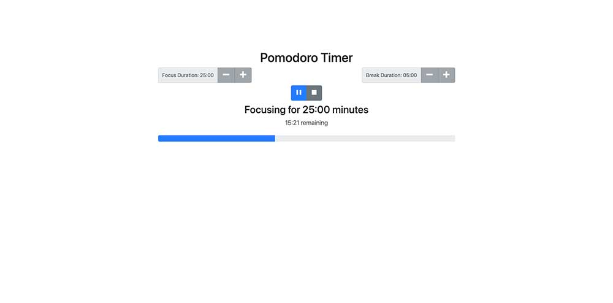
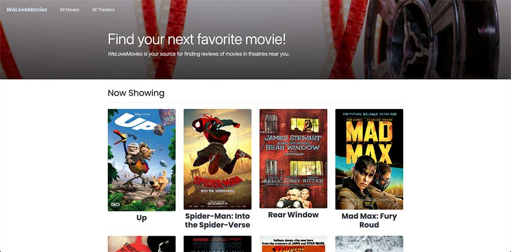
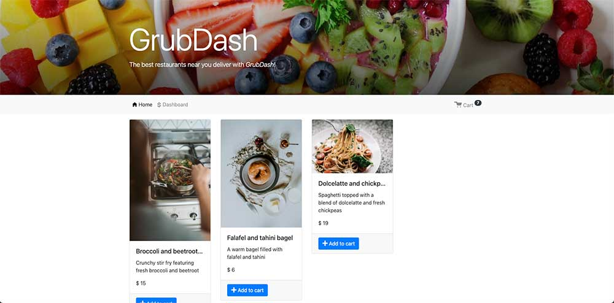
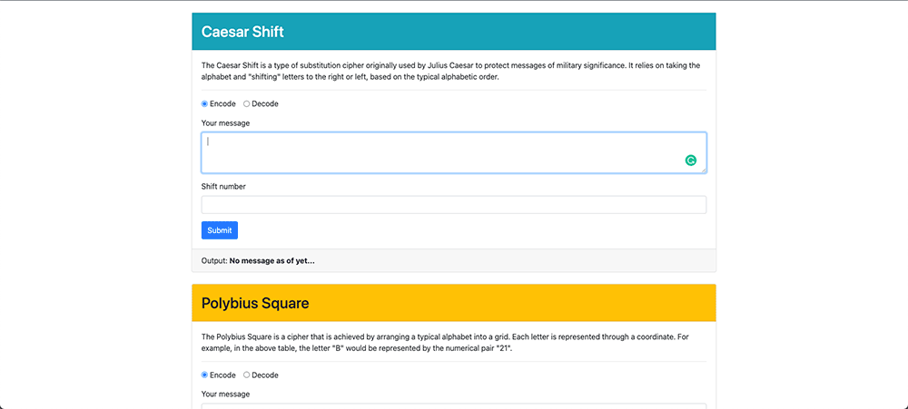

About Carlos
Learned the basics of design and software development at Westwood College, Anaheim CA. Soon after graduating in Software Engineering, I became passionate about software development as a whole and decided to pursue it. I initially tested the web development waters at a nearby school, Learning Fuze, where I picked up the fundamentals and a professional mindset.
My curiosity for technology, took me to an internship where I got to learn Swift. The experience was fun and valuable in helping me to grow as a software engineer. During this internship, I realized the importance of UI/UX and proper communication. How vital it is to be able to communicate across multiple disciplines.
This type of knowledge enables an efficient workflow in teams and enhances a developer’s creativity. Because of my tenacity, I decided to deepen my knowledge at Thinkful an online school. There I learned the fundamentals of UI/UX and followed it with a highly focused Software Engineering training course that goes beyond the fundamentals of JavaScript and React.
Now that am living in Los Angeles, CA, I look forward to finding a great programming team.
Experience with:
- Problem solving
- Data structures
- Javascript
- React
- HTML5
- CSS3
- Node
- Bootstrap5
Additional skills:
- UI/UX
- Swift
- php
- C++
- Mysql
- NodeJS
- VS Code
- Postman
- Photoshop
When not coding:
- Cycling
- Spending time w/
loved ones - Video editing
- Classical music
- Table tennis
- Photography
- Photo editing
Carlos's Work
React Project: Pomodoro Timer
The Pomodoro Project is a time management application based on the Pomodoro technique developed by Francesco Cirillo. I implemented a simplified version to demonstrate my implementation of React Hooks and maintain state across different components and algorithm logic.
We Love Movies Project
This project was designed to test my ability to build complex servers and access data through a database. I programmed the backend application to receives requests through routes, and access pertinent information through route and query parameters. I utilized Knex for connection of the database and creation of CRUD operations which adhere to RESTful principles. Express was used to build the server. The app was then deployed to the cloud. Furthermore, I implemented Knek's migration tool to create the database schemas.
Grub Dash
I was tasked with setting up an API and building out specific routes so that the frontend developers can demo some initial design ideas for the big bosses at a fictional fast food startup called GrubDash. The GrubDash project tested my ability to build APIs with complex validation. In a nutshell, I wrote custom middleware functions, built APIs that followed RESTful design principles, accessed relevant information through route parameters and received requests through routes.
Decoder Ring Project
The Decoder Ring Project was built as my 2nd project. Introduced as a problem solving exercise in breaking down algorithms for new problems. Using JavaScript skills to resolve the complex algorithms necessary to create 3 historical cyphers. I created the ciphers for the Caesar Shift, Polybius Square and Substitution Cipher. The Decoder Ring Project also introduced the practice of Test Driven Development by writing a series of unit tests using Mocha and Chai.